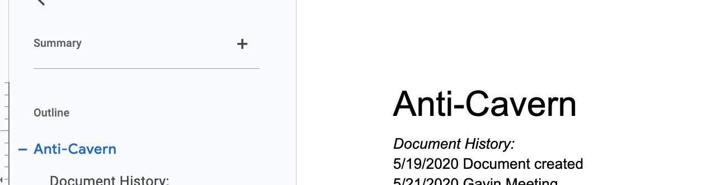

What is Anti-Cavern?
Tom Weir Anti-Cavern is a game that began taking shape in my head right as I was leaving highschool. This also happened to be during the height of the Covid pandemic during 2020. I was able to write up a story and began thinking of what the gameplay would be. At the time I did not have any game dev experience which is part of why I enrolled at MSU to begin with. The game is centered around a teenage game dev who is struggling to make their first game and falls asleep at their desk one night. They are transported to a world that is almost completely unfinished and without color. After making it through the tutorial area, they are greeted by a desk and once they sit at it, the color red begins to fill the area creating red objects like flowers and adding red hues to the ground. A cutscene plays and the first color is added to the world. As the game progresses, more colors are added each bringing their own abilities and story beats. The story of the game follows the emotions of the character such as the idea phase, the building phase, getting inspiration, and burnout among other things. The project got abanodoned during the pandemic however, it never left my mind. Now that I am almost done with shool, I think I might start working on it again.
| Event | Date |
|---|---|
| Document created | 5/19/2020 |
| Morgan Meeting + other updates | 5/21/2020 |
| Lily update Levels described | 5/25/2020 |
| Seth Meeting | 6/11/2020 |
| Wall of fire | 6/13/2020 |
| Minor edits | 7/9/2020 |
| Added document outline and reorganized | 7/22/2020 |
| Gavin Meeting | 7/31/2020 |
| Added Planned Development | 7/31/2020 |
| Timeline to Document Gavin | 8/1/2020 |
| Defined character abilities | 8/8/2020 |
| Cutscene game story | 8/11/2020 |
| Interactions | 11/5/2023 |
| Revisited with knowledge from college | 9/16/2020 |